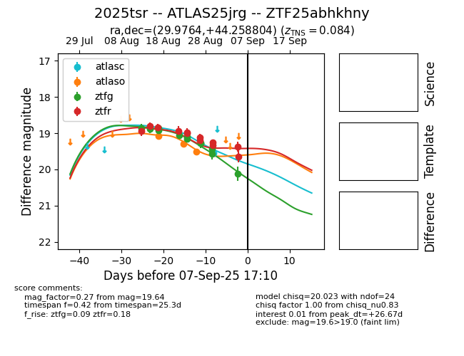

Target 2025tsr at 2025-08-27 12:44, see:
FINK: fink-portal.org/ZTF25abhkhny
Lasair: lasair-ztf.lsst.ac.uk/objects/ZTF25abhkhny
ALeRCE: alerce.online/object/ZTF25abhkhny
TNS: wis-tns.org/object/2025tsr
YSE: ziggy.ucolick.org/yse/transient_detail/2025tsr
alt names
ZTF25abhkhny (ztf,fink)
2025tsr (tns,yse)
ATLAS25jrg (atlas)
coordinates:
equatorial (ra, dec) = (29.9764,+44.25880)
galactic (l, b) = (135.6599,-16.91426)
photometry
last atlaso=19.23, ztfg=19.28, ztfr=19.19
2 atlaso, 9 ztfg, 8 ztfr detections
